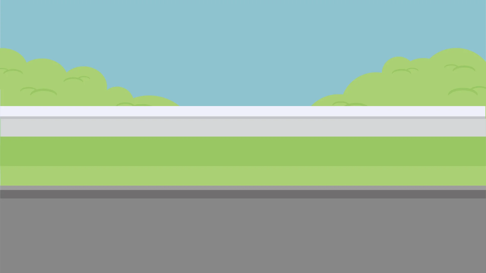
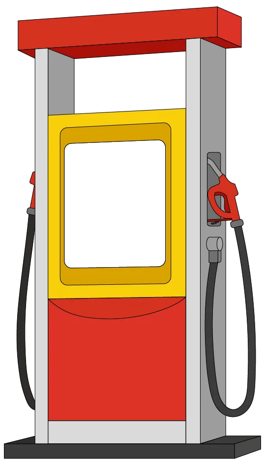
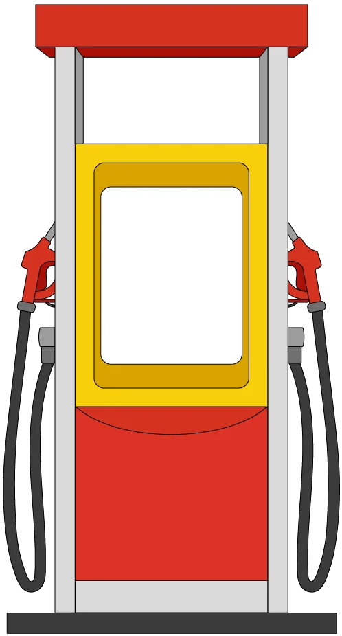
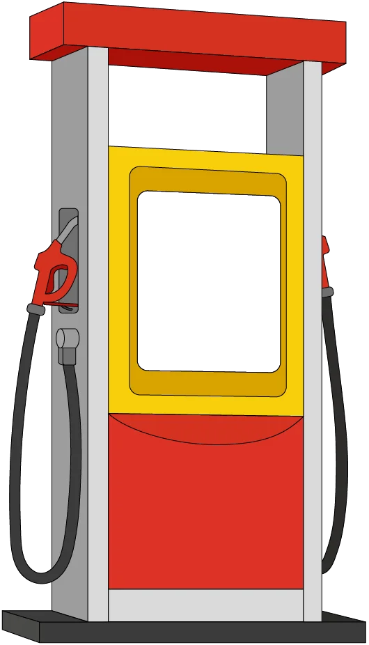

<main class="h-screen flex flex-col items-center justify-center relative">
  <div class="relative w-screen h-screen">
    <!-- Imagen de fondo -->
    <div class="absolute inset-0 z-0">
      
    </div>
  
    <!-- Contenedor de los surtidores con sus componentes -->
    <section class="absolute inset-0 flex items-center justify-center w-3/4 mx-auto">
      <!-- Surtidor Izquierda -->
      <div class="relative h-full w-full flex items-center justify-center">
        
        <!-- Componente en el cuadrado vacío -->
        <app-reel
          class="absolute top-[30%] left-[19%] w-[50%] h-[30%] flex items-center justify-center z-10  bg-white"
          [duration]="getDuration(0)"
          [index]="0"
          [targetSymbol]="targetSymbol"
          (stop)="onReelStop(0)"
          [ngClass]="'small-symbol'" 
        ></app-reel>
      </div>
  
      <!-- Surtidor Medio -->
      <div class="relative h-full w-full flex items-center justify-center">
        
        <app-reel
          class="absolute top-[30%] left-[25%] w-[50%] h-[30%] flex items-center justify-center z-20"
          [duration]="getDuration(1)"
          [index]="1"
          [targetSymbol]="targetSymbol"
          (stop)="onReelStop(1)"
          [ngClass]="'small-symbol'" 
        ></app-reel>
      </div>
  
      <!-- Surtidor Derecha -->
      <div class="relative h-full w-full flex items-center justify-center">
        
        <app-reel
          class="absolute top-[30%] right-[19%] w-[50%] h-[30%] flex items-center justify-center z-10 bg-white"
          [duration]="getDuration(2)"
          [index]="2"
          [targetSymbol]="targetSymbol"
          (stop)="onReelStop(2)"
          [ngClass]="'small-symbol'" 
        ></app-reel>
      </div>
    </section>
  </div>

  <button
    (click)="generateRandomSymbols()"
    type="button"
    [disabled]="spinning.includes(true)"
    class="text-white bg-gradient-to-r from-green-400 via-green-500 to-green-600 hover:bg-gradient-to-br font-medium rounded-lg px-5 py-2.5 text-center me-2 w-40 text-4xl z-10">
    {{ isla }}
  </button>
</main>

<audio id="audio_back" controls hidden>
  <source type="audio/mpeg" src="../../../assets/music/back.mp3">
</audio>
<audio id="audio_win" controls hidden>
  <source type="audio/mpeg" src="../../../assets/music/win.mp3">
  <source type="audio/mpeg" src="../../../assets/music/applause-180037.mp3">
</audio>
<router-outlet></router-outlet>
